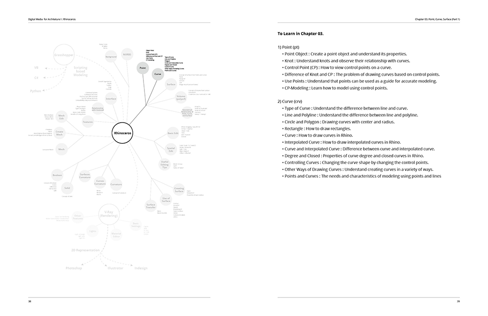
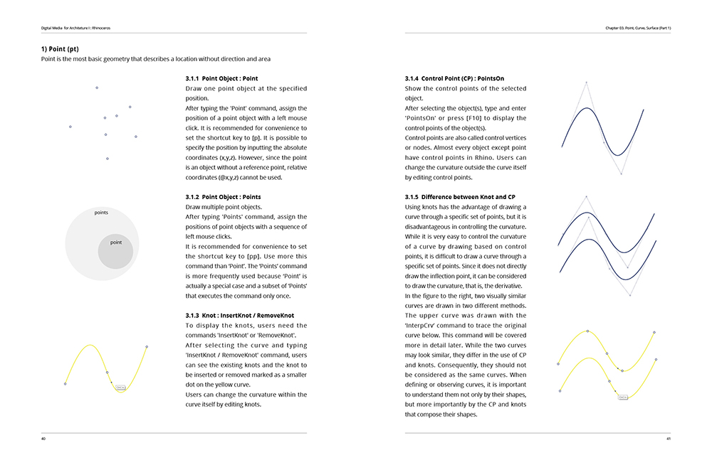
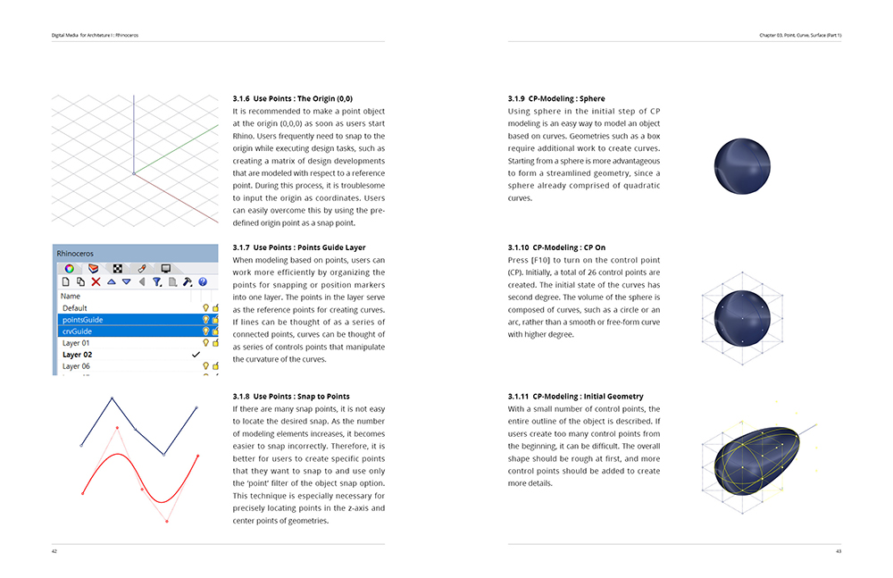
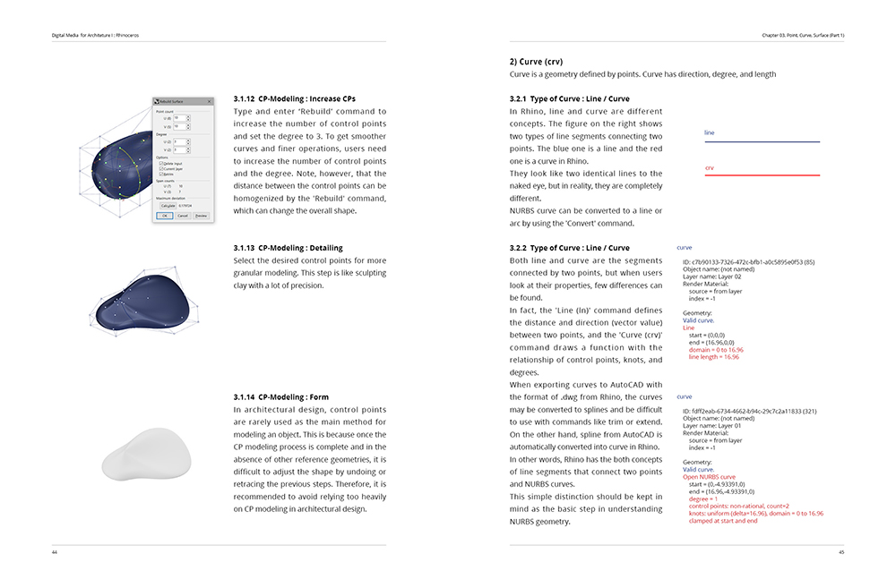

Developments in Computer-Aided Design (CAD) continues to influence the nature of architectural design practice. As a communication and design tool, CAD software not only supports the practical operations of architectural design practice but also introduces design theories that are unique to the medium. As the first of the Digital Media Series, this book covers Rhinoceros (Rhino) as one of the 3D CAD software that promises to provide new affordances in architectural design.
This book recognizes the challenges beginners face when learning a new software like Rhino. While in reality the tool is not that difficult to learn, beginners often spend too much time stuck on using a particular command. This book was written to alleviate these challenges. Through an overview of best practices in modeling habits, logics, and tips, we strive to help users build skills in critically analyzing the modeling process, determining the best method for the task at hand, and realizing 3D models as intended by the design idea. We believe that users do not need to know everything about Rhino’s contents and commands in order to successfully apply the tool in architectural design. This book is not intended for users who desire a comprehensive description of Rhino, but instead is intended for users who desire to use Rhino efficiently as a design tool.

There are two main challenges when learning how to use Rhino. The first issue is the ‘commands’. Since Rhino relies on a command-based system, not knowing or recalling commands will render it useless. However, the good news is that most architectural designers are already familiar with command-based CAD systems like AutoCAD. Therefore, it is important for beginners to relieve themselves of the pressure to learn new commands. Whenever applicable, this book with cover Rhino commands as they correlate with similar commands in AutoCAD to promote familiarity.

The second issue is the ‘modeling method’. Without regular practice, users will forget the commands and how model properly. Using Rhino with speed and flair does not necessarily represent an advanced user. It is instead more important for users to understand the essential properties of Rhino and how they contribute to the process of modeling accurately, determining the appropriate method for the task at hand, building a strategy to model efficiently, and knowing methods that are unique to Rhino.

Therefore, this book will promote a specific mantra for a structured manipulation of geometry: from points to curves, from curves to surfaces, and from surfaces to volumes. If users earnestly understand this mantra once, they will be able to use Rhino for long term even after forgetting a few commands. Looking ahead, this mantra also provides the benefit of allowing beginners to learn Grasshopper, a popular generative design tool, more easily. To this end, users should focus on understanding the first few chapters that describe the underlying principles behind the mantra. This will be the first step to become an advanced user of Rhino in architectural design.
This book is not meant to be the only reference for learning Rhino. Users should use the book in combination with the wealth of public resources such as forums, tutorials, and documentations created by other advanced users. For any part of the book that the users may need more detailed information on, it is recommended to refer to the official documentation created by the software developer (McNeel).

You can buy this book on Amazon® on the right column.